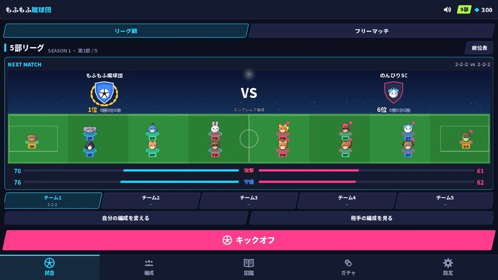
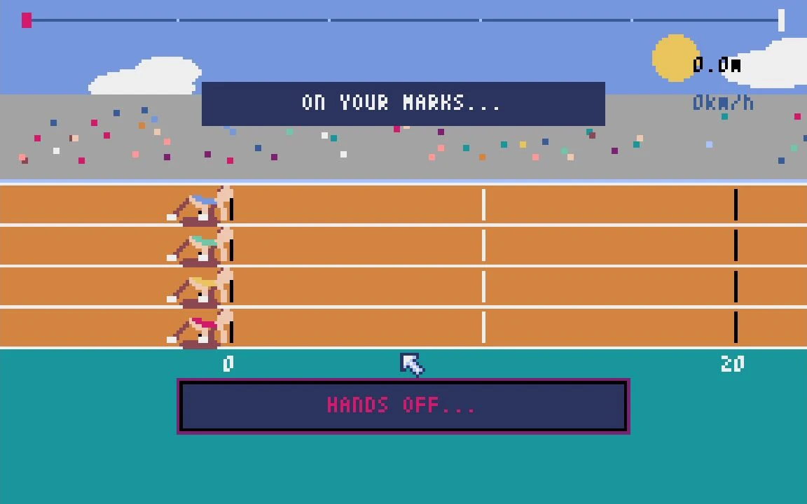

小さな町を見守るゲーム。
ブラウザ / 、プロトタイプ

動物たちとチームを育てる。
ブラウザ

タイミングで挑む100m走。
退屈していた男の日常が、動き出す。
1話公開中 / 、続きは制作中
30代の会社員が、もう一度100mに夢中になる。
7話公開中 / 、続きは制作中
人生に飽きていた男が出会う、競輪の物語。
8話公開中 / 、続きは制作中
100m・200m・400mのタイムを記録して振り返る。
Webアプリ
作品一覧を縦リストに変更。「カミサマ、いま起きてる？」にプロトタイプ表示を追加しました。
「まだ、速くなれる。」第7話「走らない三日間」を公開しました。
「退屈のオッズ」第8話「その先」を公開しました。